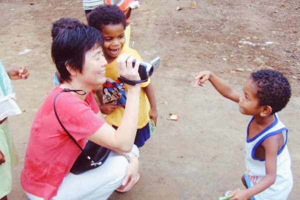
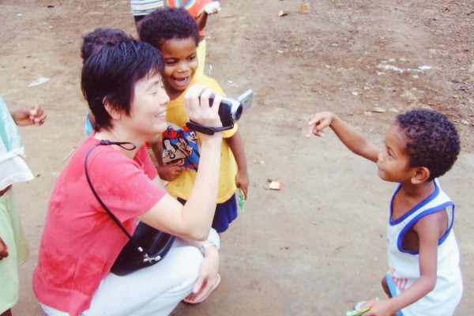

Spread The Lord's word across the Earth.
“My command is this: Love each other as I have loved you. Greater love has no one than this: to lay down one’s life for one’s friends.”
John 15:12-13
 



Christian Ministry Training Mission (CMTM) was established in 2004. The mission of the CMTM is to cultivate and train suitable Christian ministers to spread the Gospel, establish and pastor churches, and bring the Kingdom of God to every place.
We aim to fight the rising crisis of the decline in church population by maintaining in-touch ministry staff, and a spreading deeper understanding of fundamental beliefs.

1. Train missionaries in China, the Philippines, Malaysia, Taiwan, Ethiopia, and more to spread the gospel to areas where it has not been well received.
2. When the number of believers has stabilized, we support and train evangelists to establish churches.
3. After the establishment of the church, we emphasized the continuous training of the ministry personnel so that the church could continue to build up healthy generations.